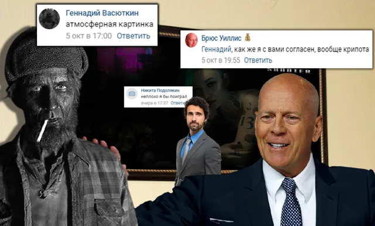
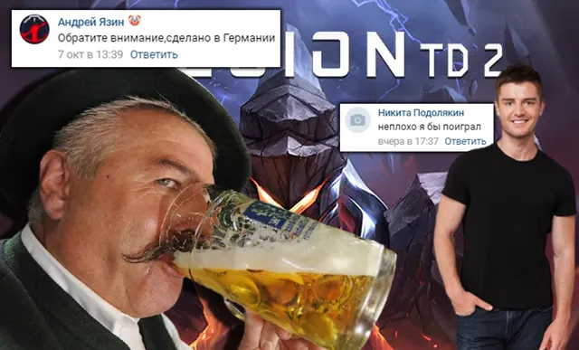

Ваши комментарии
ВКонтакте
🌌Добрый вечер, дорогие подписчики, пришло время одной из самых любимых вами рубр…
11 октября 2020 · №589 в выгрузке стены · оригинал во ВКонтакте ↗



#ВашиКомментарии@criticssteam #13
🌌Добрый вечер, дорогие подписчики, пришло время одной из самых любимых вами рубрик. Сегодня очень насыщенный выпуск, приятного вечера!
😇А титул [https://vk.com/@criticssteam-sistema-titulov|комментатора] получают:
[id347679904|Андрей Язин]
[id191917835|Глеб Иванов]
[id397796695|Никита Подолякин]
[id491132613|Брюс Уиллис]
[id605281782|Геннадий Васюткин]
[id160619103|Кирилл Старцев]
[id138204159|Александр Федотов]
-------------------
Спасибо за комментарии, но как мы всегда говорим: "Пишите больше!"
🌌Добрый вечер, дорогие подписчики, пришло время одной из самых любимых вами рубрик. Сегодня очень насыщенный выпуск, приятного вечера!
😇А титул [https://vk.com/@criticssteam-sistema-titulov|комментатора] получают:
[id347679904|Андрей Язин]
[id191917835|Глеб Иванов]
[id397796695|Никита Подолякин]
[id491132613|Брюс Уиллис]
[id605281782|Геннадий Васюткин]
[id160619103|Кирилл Старцев]
[id138204159|Александр Федотов]
-------------------
Спасибо за комментарии, но как мы всегда говорим: "Пишите больше!"